| 日付 | 2019年12月8日（日） |
|---|---|
| 山域 | 高尾周辺 |
| メンバー | グループ（男3女4子供7） |
| 山行形態 | 子連れ日帰り |
| アクセス | 電車、バス、ケーブルカー |
| ルート (Map) | 千木良バス停 (9:08) - (9:16) 富士見茶屋 (9:30) - (10:46) 城山 (11:19) - (11:56) もみじ台 (13:29) - (13:32) 高尾山 (13:43) - (15:04) ケーブルカー高尾山駅 |
1年振りの山友達との山行。今回は無難に高尾山。
高尾山に行くのは3年振りで、これも久々だ。
今回は相模湖方面から城山に登り、そこから高尾山に向かうことにする。
千木良バス停到着。標高200m。
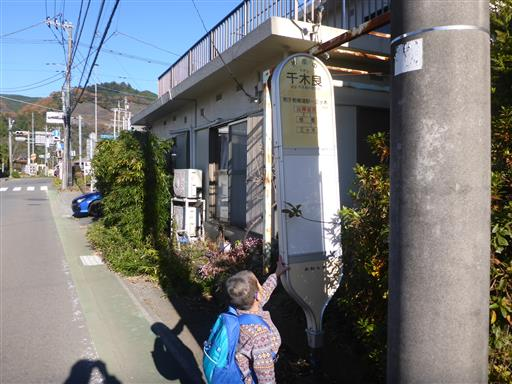
しばらくは車道を歩いて、登山口へ向かう。
畑は日影の部分が霜で真っ白に染まっている。
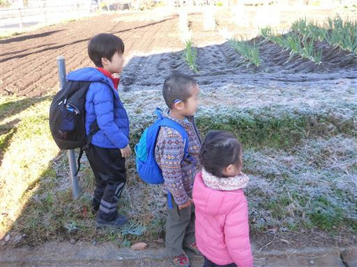
「どろぼう進入禁止」の標識。何か効果があるのだろうか？
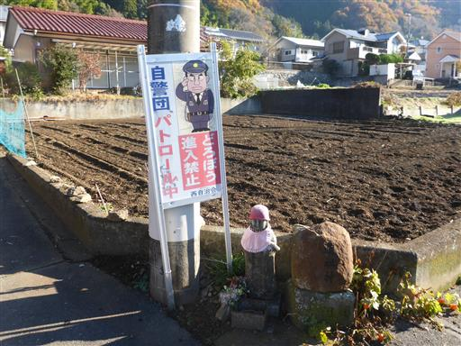
本日は快晴。周囲の景色が明るい。
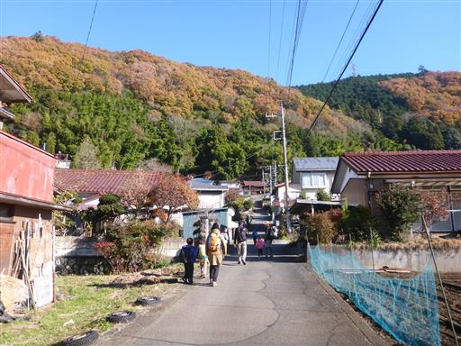
登山口に富士見茶屋がある。
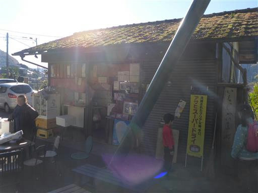
草もちが名物のようだ。1個170円と少々高いが、素朴な味で美味しい。
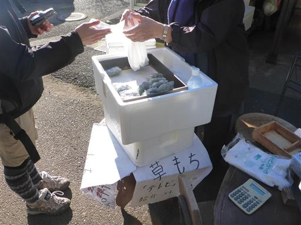
登山道はここから始まる。公衆トイレもあるので便利だ。
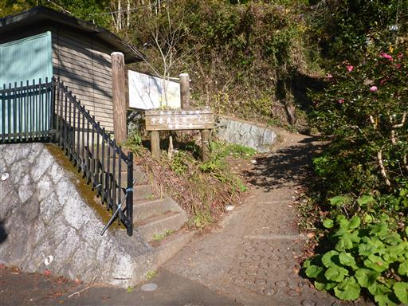
登山開始。
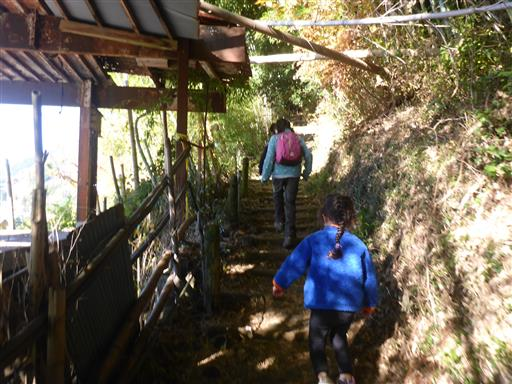
傾斜のきついところはあまりなく、緩やかな道が続く。
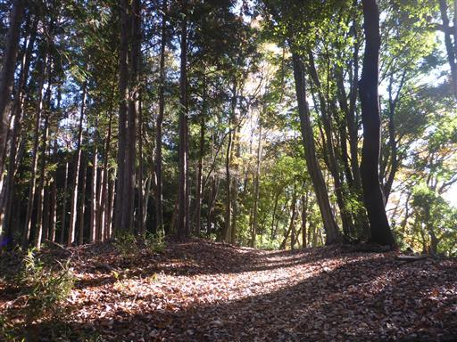
階段も比較的ゆったり。道が広くて歩きやすい。
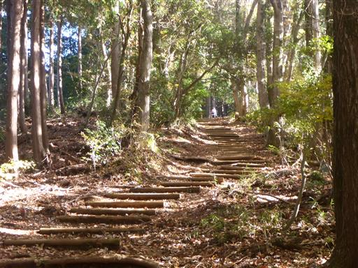
お地蔵さま。隣に頭だけのお地蔵さまも置かれている。
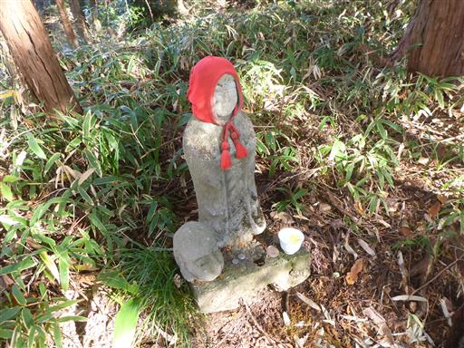
広場に到着。
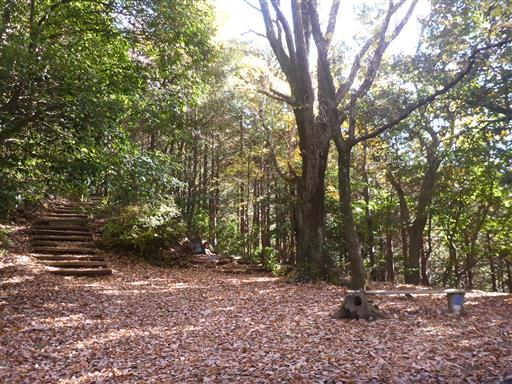
お地蔵さまとこけし。お地蔵さまは何体かあったが、
必ずコップの水にモミジの落ち葉が一枚浮かべられている。
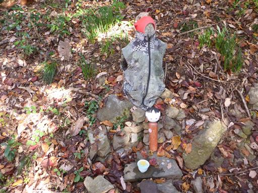
展望ポイントに到着。富士山の頭が見えている。
眼下に見えているのは相模湖。良い景色だが電線が少々邪魔だ。
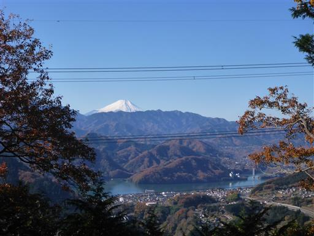
子供達は棒を持って遊びながら歩いていく。ペースはあまり上がらない。
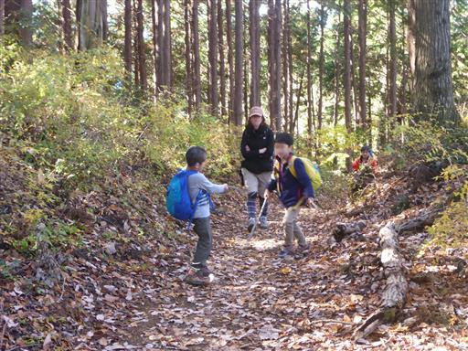
城山山頂に到着。大勢の登山客で賑わっている。
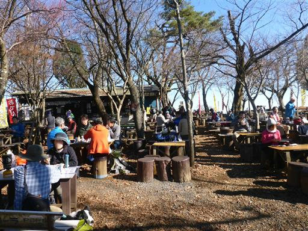
背後には富士山がきれいに見える。見事な青空だ。
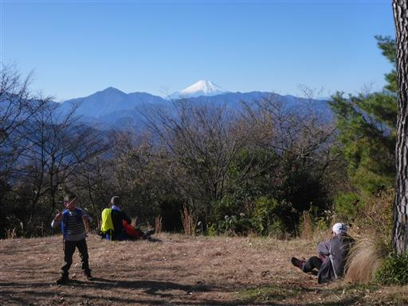
立派な山頂標識。近くの切り株が天狗の頭の形に彫られている。
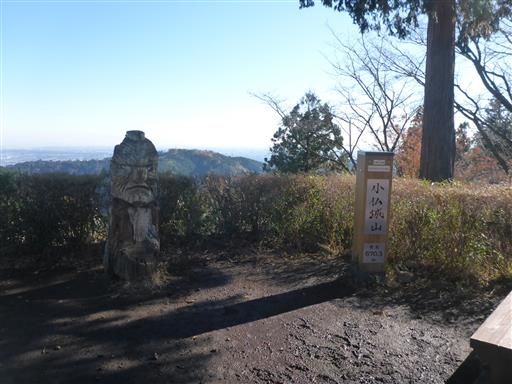
中央奥の山がこれから向かう高尾山だ。
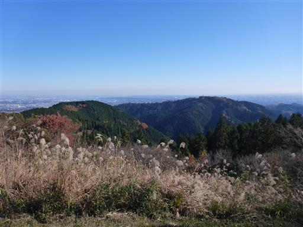
城山では椅子に腰かけてしばらくおやつタイムにする。
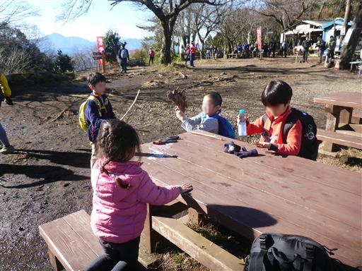
きれいな虫を発見。
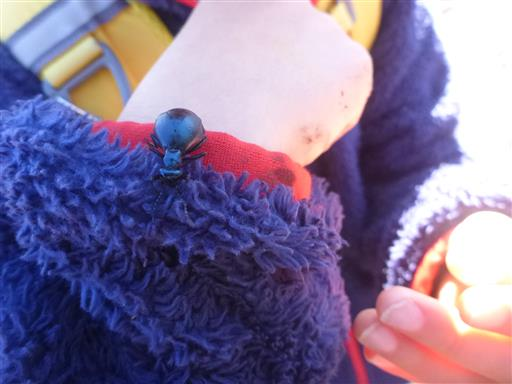
休憩を取ったら高尾山に向けて出発。
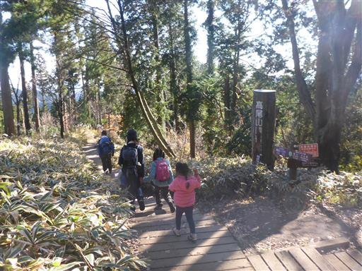
周囲はススキがきれいだ。
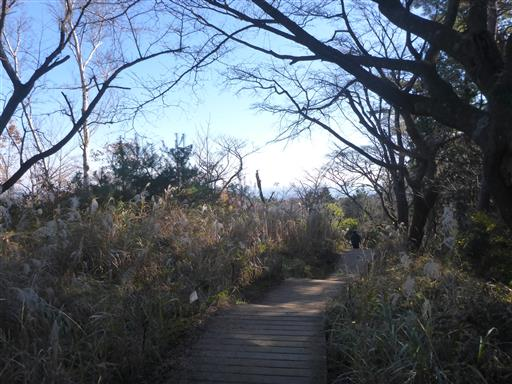
大きい子供たちは先にどんどん進んでいく。
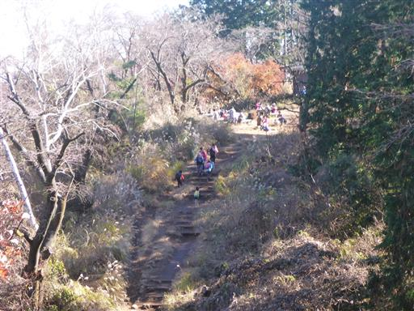
ところどころで待っている。
年齢がバラバラなので、歩くペースはあまり合わない。
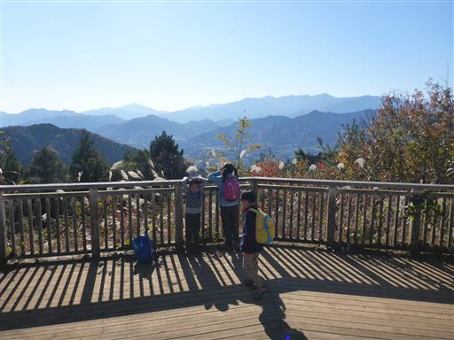
稜線の紅葉はほとんど終わっているが、いくらか美しい紅葉が残っている。
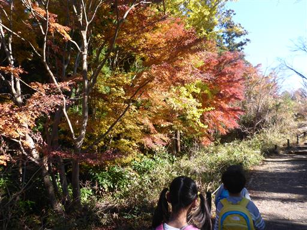
もみじ台に到着。山頂は混雑してそうなので、ここで昼食をとることにする。

ここから見る富士山も美しい。
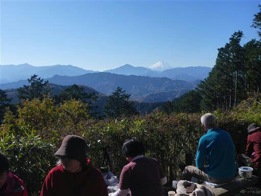
空き地の一角にシートを広げる。
山頂ほどではないが、ここも大勢の登山客で賑わっている。
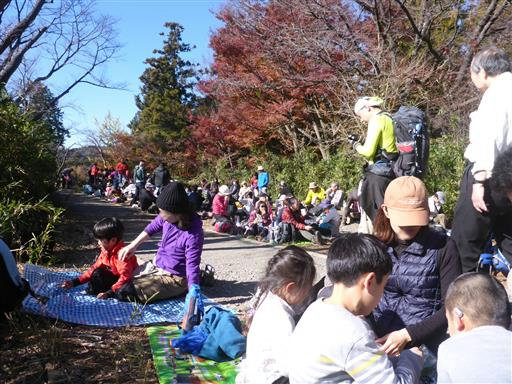
遅れて参加のもう1家族とも合流し、ここでのんびりお話。
子供達もおやつ交換をしたり遊んだりして時間を過ごす。
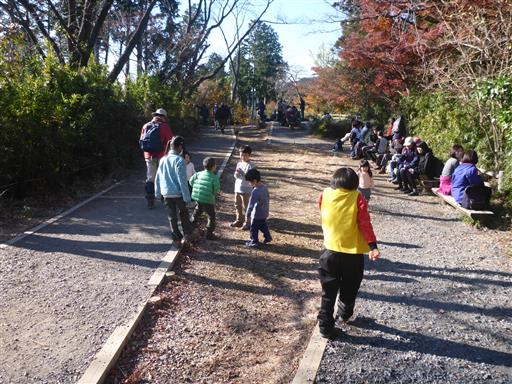
昼食をとったら高尾山に向けて出発する。
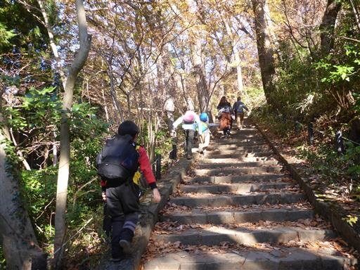
大混雑の高尾山に到着。年々人が増えているような気がする。
国際色豊かで様々な言語が聞こえる。
気を抜くと一瞬ではぐれてしまいそうなので、さっと通り過ぎる。
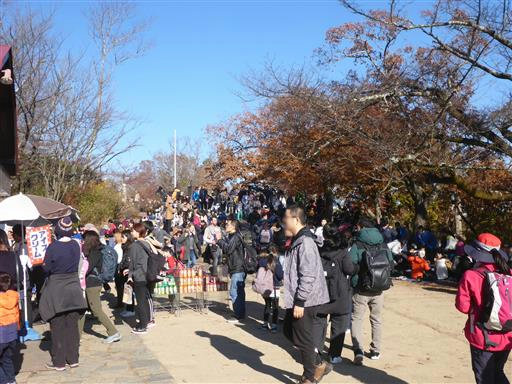
混雑する登山道から離れて3号路に入る。
これまでの喧騒が嘘のように静かになる。
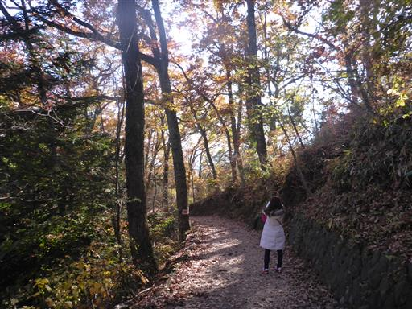
この道はところどころで大木が見られる。
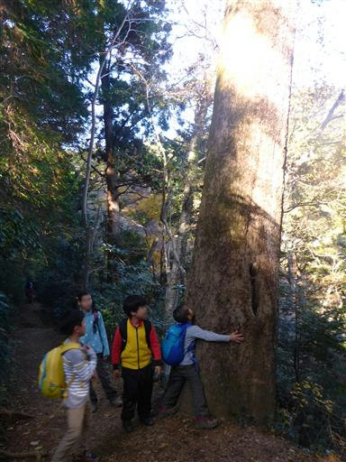
幹と幹が途中で合体している。
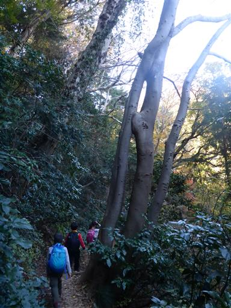
子供4人はどんどん前に進んでいくので追いかけるのが大変。
前の登山者に追いついたところでようやくペースが落ちる。
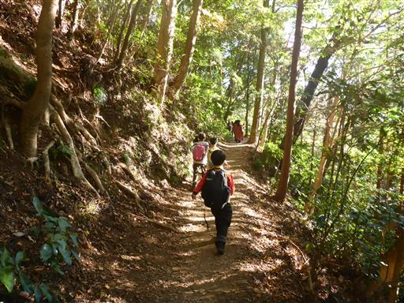
このまま6号路経由で下山しようと考えていたが、
みなケーブルカーが良いというので、1号路に復帰する。
途端に人通りが多くなり、田舎から都会に出てきた気分だ。
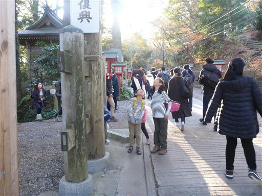
売店が軒を連ねる。子供たちは引っ掛かりまくっている。
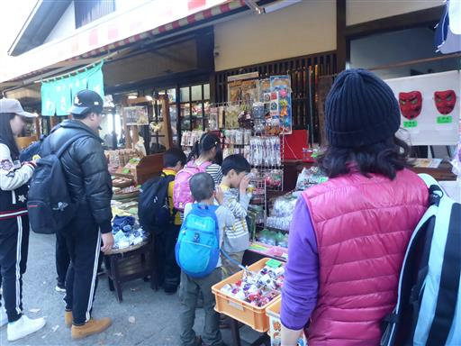
ケーブルカー高尾山駅に到着。標高450m。
目の前に見える尾根が美しい。
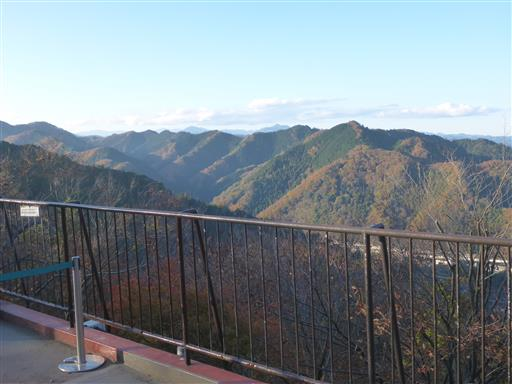
ケーブルカーが到着。15時を過ぎているが、まだまだ客はやって来る。
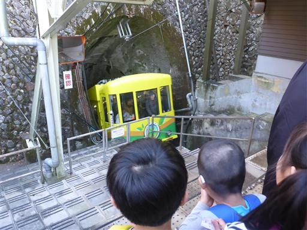
車両の先頭に陣取る。急斜面の路線が見えるので子供たちは大はしゃぎだ。
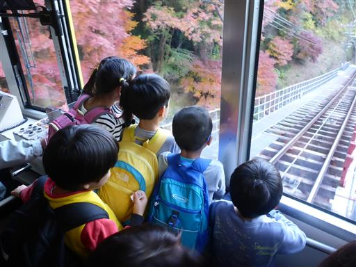
ケーブルカーを降りても売店が並ぶ。いろいろ物色しながら歩いていく。
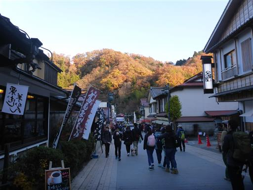
高尾山口駅に到着。
観光の拠点となるこの駅は、昔に比べてきれいに改装されている。
静かな道、賑わっている道、高尾山のいろいろな表情が見られた登山だった。
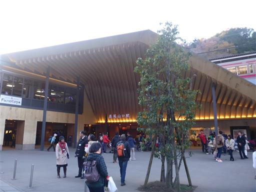